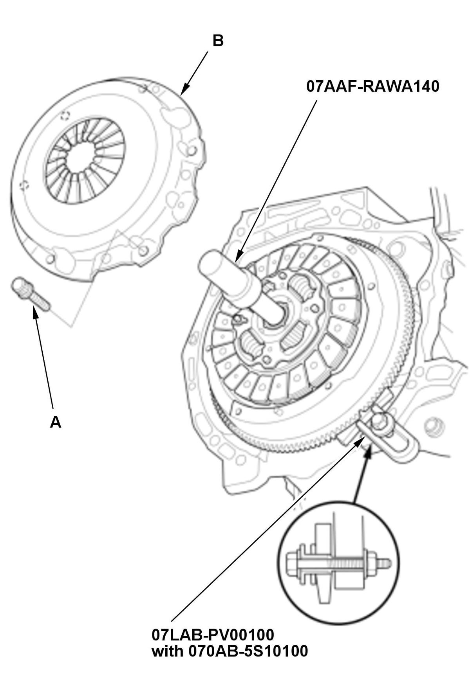
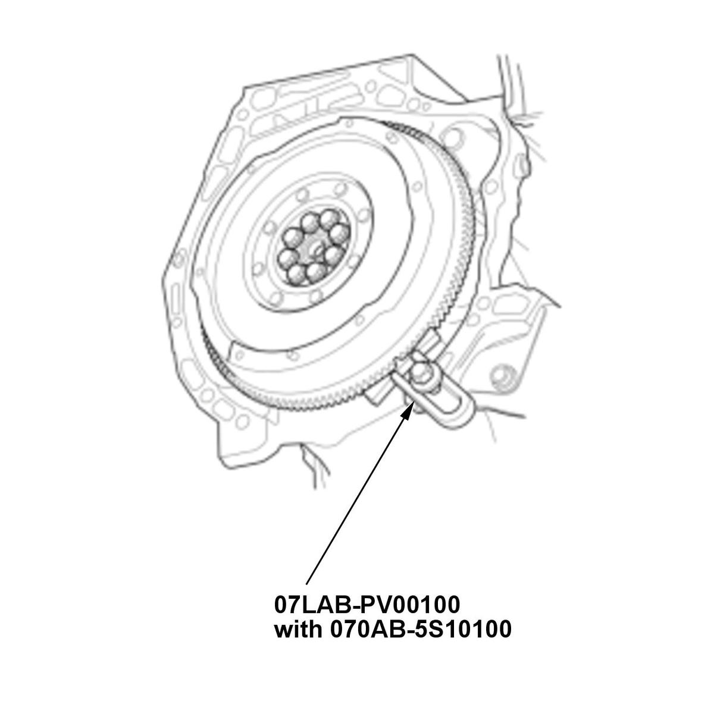

Clutch Removal and Installation (K20C1 (M/T)) (2017 2018 2019 2020 2021): Removal
WARNING: This page is about a different variant/trim than selected.
Engine Side
- Transmission - Remove
- Height of Diaphragm Spring Finger - Check
1. Check the evenness of the height of the diaphragm spring fingers using the clutch alignment disc, the clutch alignment shaft, the remover handle, and a feeler gauge (A). If the height difference is more than the standard, replace the pressure plate. Standard (New): 0.6 mm (0.02 in) max. - Pressure Plate - RemoveFig 1: Loosening Pressure Plate Bolts In Crisscross Pattern In Several Steps (K20C1 - M/T - 2017-21)

Courtesy of HONDA, U.S.A., INC.1. Install the ring gear holder, the ring gear holder attachment, and the center shaft. 2. To prevent warping, loosen the pressure plate mounting bolts (A) in a crisscross pattern in several steps, then remove the pressure plate (B).
- Pressure Plate - Inspect
1. Inspect the fingers of the diaphragm spring (A) for wear at the release bearing contact area. 2. Inspect the pressure plate surface (A) for wear, cracks, and burning. - Clutch Disc - Remove
1. Remove the clutch disc (A) and the center shaft. - Clutch Disc - Inspect
1. Inspect the lining of the clutch disc for signs of slippage or oil. If the clutch disc looks burnt or is oil soaked, replace the clutch disc. If the clutch disc is oil soaked, find and repair the source of the oil leak. 2. Measure the clutch disc thickness. If the measurement is less than the service limit, replace the clutch disc.
Standard (New): 7.4-8.0 mm (0.291-0.315 in) Service Limit: 6.2 mm (0.244 in) 3. Measure the depth of the rivet from the clutch disc lining surface (A) to the rivets (B) on both sides. If the measurement is less than the service limit, replace the clutch disc. Standard (New): 1.15-1.75 mm (0.0453-0.0689 in) Service Limit: 0.85 mm (0.0335 in) - Flywheel - Inspect
1. Inspect the ring gear teeth (A) for wear and damage. 2. Inspect the clutch disc mating surface (B) on the flywheel for wear, cracks, and burning.
- Flywheel Pilot Bearing - Check
1. Check the pilot bearing for wear and damage. 2. Check the inside surface of the pilot bearing with your finger. If the flywheel pilot bearing is not smooth, replace it.
- Flywheel Pilot Bearing - Remove
1. Remove the flywheel pilot bearing (A) using the remover weight, the remover handle, and the 20 mm bearing remover shaft set. - Flywheel - RemoveFig 2: Loosening Flywheel Mounting Bolts In Crisscross Pattern In Several Steps (K20C1 - M/T - 2017-21)

Courtesy of HONDA, U.S.A., INC.1. Loosen the flywheel mounting bolts in a crisscross pattern in several steps. Remove the bolts, then remove the flywheel, the ring gear holder, and the ring gear holder attachment.


Transmission Side
- Transmission - Remove
- Release Bearing - Remove
1. Remove the release fork boot (A). 2. Remove the release fork (B) by squeezing the release fork set spring (C).
3. Remove the release bearing (D).
- Release Bearing - Check
1. Check the play of the release bearing by spinning it by hand. If there is excessive play or noise, replace the release bearing.
NOTE: The release bearing is packed with grease. Do not wash it in solvent.